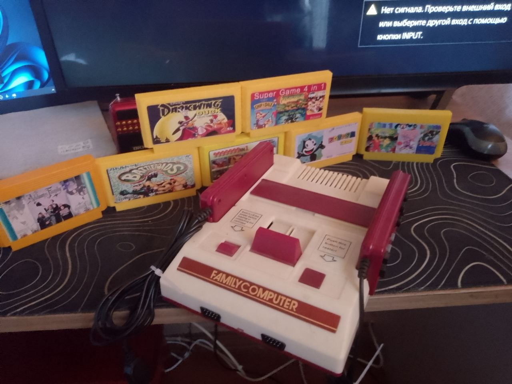

Dendy — це не просто приставка, це квиток у часи, коли ігри були чистим драйвом, а складність рівнів виховувала характер.
Цей екземпляр — один із найякісніших клонів класичного Famicom. Миттєва реакція, чистий звук, що прошиває ностальгію, та зображення, яке не потребує додаткових фільтрів. Стан приставки близький до ідеального — вона буквально чекала на вас усі ці роки, не втративши своєї первозданної магії.
У комплекті:
• Консоль, що зберегла дух оригіналу.
• Два джойстики для нескінченних баталій у «Танчики» чи «Контру».
• Набір картриджів (мікс легендарної класики та раритетів).
20 GOTO "EPIC":
Це час зупинити гонку за 4K-текстурами та повернутися до витоків. Коли ти натискаєш кнопку живлення, світ навколо стишується. 8 біт, що звучать голосніше за мільйони полігонів. Це не залізо — це портал у час, де друзі збиралися на килимі перед телевізором, а перемога в одному рівні була найвищим досягненням життя. Ваш диван вже скучив за цим звуком старту.
